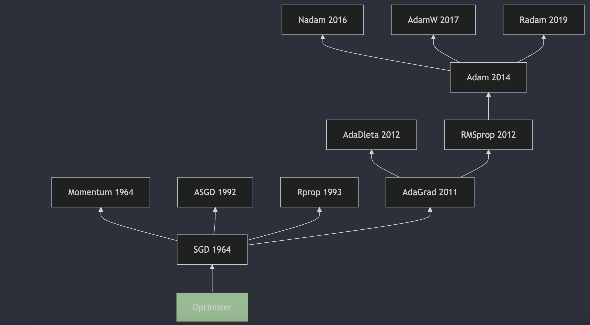

揭秘神经网络训练的“引擎”——优化器（Optimizer）

🚀 在训练深度学习模型时，选择合适的优化器至关重要。它就像是驱动模型学习的强大引擎，决定了模型能否快速、稳定地找到最优解。从经典的 SGD 到广受欢迎的 Adam 及其变种，优化器的世界充满了各种精妙的设计和权衡。
你是否好奇：
不同的优化器是如何工作的？它们各自有什么优缺点？
Momentum 如何帮助梯度下降“冲”出局部最优？
Adam 为何能在众多任务中脱颖而出？AdamW 和 RAdam 又带来了哪些改进？
本文将带您踏上一场优化器世界的探索之旅，从基础的随机梯度下降（SGD）出发，逐一解析 Momentum、AdaGrad、RMSprop、Adam、Nadam、AdamW、RAdam 等主流优化算法的核心思想、更新过程和实际应用。无论您是深度学习初学者还是希望深化理解优化策略的实践者，相信本文都能为您带来启发！
(´∀｀)♡ 本文来源：CSDN-Sylvan Ding ，版权归原作者所有，转载请注明出处。如果您喜欢本文，欢迎点赞并收藏。
1. SGD
随机梯度下降（Stochastic Gradient Descent，SGD）是一种用于优化可微分目标函数的迭代方法，它是梯度下降优化的随机近似。SGD的提出可以追溯到1951年，由Herbert Robbins和Sutton Monro在他们的论文《A Stochastic Approximation Method》中首次描述了随机近似方法，这可以看作是SGD的前身。随后，J. Kiefer和J. Wolfowitz在1952年发表了论文《Stochastic Estimation of the Maximum of a Regression Function》，这篇论文更接近于机器学习领域中SGD的现代理解。
随机梯度下降（SGD）的更新公式是梯度下降法的一种变体，它用于优化目标函数，特别是在处理大规模数据集时。SGD 在每次迭代中只使用一个或一小批样本来计算梯度，然后更新模型参数。这样做可以减少每次迭代的计算成本，并有助于算法逃离局部最小值。
1.1. SGD 更新过程
SGD 用于最小化损失函数 L L L w \mathbf{w} w
初始化
初始化参数向量 w 0 \mathbf{w}_0 w 0
设定全局学习率 η \eta η
迭代更新过程
在每次迭代 t = 1 , 2 , … t = 1, 2, \dots t = 1 , 2 , …
随机选择样本：
从训练数据集中随机选择一个样本 ( x i , y i ) (x_i, y_i) ( x i , y i ) x i x_i x i y i y_i y i
计算梯度：
计算损失函数 L L L w t \mathbf{w}_t w t
g t = ∇ w L ( w t ; x i , y i ) \mathbf{g}_t = \nabla_{\mathbf{w}} L(\mathbf{w}_t; x_i, y_i) g t = ∇ w L ( w t ; x i , y i )
这里 L ( w t ; x i , y i ) L(\mathbf{w}_t; x_i, y_i) L ( w t ; x i , y i ) ( x i , y i ) (x_i, y_i) ( x i , y i )
更新参数：
使用计算得到的梯度更新参数：w t + 1 = w t − η ⋅ g t \mathbf{w}_{t+1} = \mathbf{w}_t - \eta \cdot \mathbf{g}_t w t + 1 = w t − η ⋅ g t
其中 η \eta η g t \mathbf{g}_t g t
重复迭代
重复步骤 2，直到满足停止条件（例如达到最大迭代次数、损失收敛或梯度足够小）。通常，SGD 会遍历数据集多次（称为多个 epoch），每次遍历时随机打乱数据顺序以确保随机性。
SGD 的特点
随机性： SGD 每次迭代只使用一个样本计算梯度，因此梯度估计具有较高的噪声。这种随机性有助于逃离局部最优，但也可能导致优化路径震荡。计算效率： 由于每次迭代只处理一个样本，SGD 的计算成本较低，适合大规模数据集。收敛性： SGD 的收敛速度较慢，且可能在最优解附近震荡，但通过适当调整学习率（如逐步衰减），可以实现较好的收敛。
1.2. Mini-Batch SGD 更新过程
Mini-Batch SGD 是 SGD 的一种变体，通过在每次迭代中使用一小批（mini-batch）样本而非单个样本计算梯度，从而在计算效率和梯度估计稳定性之间取得平衡。
Mini-Batch SGD 更新过程
初始化：
与 SGD 相同，初始化参数向量 w 0 \mathbf{w}_0 w 0 η \eta η
迭代更新过程：
在每次迭代 t = 1 , 2 , … t = 1, 2, \dots t = 1 , 2 , …
随机选择一批样本： 从训练数据集中随机选择一小批样本（batch size 通常为 32、64、128 等），记为 B t = { ( x i 1 , y i 1 ) , ( x i 2 , y i 2 ) , … , ( x i b , y i b ) } B_t = \{(x_{i1}, y_{i1}), (x_{i2}, y_{i2}), \dots, (x_{ib}, y_{ib})\} B t = {( x i 1 , y i 1 ) , ( x i 2 , y i 2 ) , … , ( x ib , y ib )} b b b
计算平均梯度： 计算损失函数对当前参数 w t \mathbf{w}_t w t
g t = 1 b ∑ ( x i , y i ) ∈ B t ∇ w L ( w t ; x i , y i ) \mathbf{g}_t = \frac{1}{b} \sum_{(x_i, y_i) \in B_t} \nabla_{\mathbf{w}} L(\mathbf{w}_t; x_i, y_i) g t = b 1 ( x i , y i ) ∈ B t ∑ ∇ w L ( w t ; x i , y i )
这里 g t \mathbf{g}_t g t
更新参数： 使用平均梯度更新参数：
w t + 1 = w t − η ⋅ g t \mathbf{w}_{t+1} = \mathbf{w}_t - \eta \cdot \mathbf{g}_t w t + 1 = w t − η ⋅ g t
Mini-Batch SGD 的优点
Mini-Batch SGD 在深度学习中是目前最常用的优化方式，因为它在计算效率和收敛稳定性之间取得了良好的平衡：
稳定性： 相比 SGD，Mini-Batch SGD 的梯度估计更准确，优化路径更平滑，收敛速度通常更快。并行化： Mini-Batch SGD 可以通过 GPU 并行计算批次内样本的梯度，大幅提高训练速度。适用性： 通过调整 batch size，可以在内存和计算资源之间找到平衡点，适应不同的硬件环境。
2. Momentum
动量（Momentum）方法最初由B.T.Polyak在1964年提出。这一方法被用来加速梯度下降算法的收敛，特别是在处理具有较大条件数的优化问题时。B.T.Polyak在论文《Some methods of speeding up the convergence of iteration methods》中描述了这一方法，这篇论文发表在了《USSR Computational Mathematics and Mathematical Physics》上。动量方法通过在每一步的更新中加入一部分上一步的速度，帮助算法在相关方向上加速，并减少在目标函数的平坦区域中的震荡。这种方法后来被广泛应用于机器学习领域，尤其是在深度学习中，成为了优化算法中的一个重要组成部分。
2.1. EWA
指数加权平均（Exponential Weighted Moving Average, EWA）是一种用于平滑时间序列数据或信号的统计方法，通过对历史数据赋予指数衰减的权重来计算平均值。它的核心思想是：最近的数据对当前平均值的影响更大，而较旧的数据影响逐渐减小。
基本原理
指数加权平均通过一个衰减因子（通常记为 β \beta β α \alpha α x 1 , x 2 , … , x t x_1, x_2, \dots, x_t x 1 , x 2 , … , x t
v t = β ⋅ v t − 1 + ( 1 − β ) ⋅ x t v_t = \beta \cdot v_{t-1} + (1 - \beta) \cdot x_t v t = β ⋅ v t − 1 + ( 1 − β ) ⋅ x t
其中：
v t v_t v t t t t v t − 1 v_{t-1} v t − 1 t − 1 t-1 t − 1 x t x_t x t t t t β \beta β
初始值 v 0 v_0 v 0
特点
指数衰减权重： 权重随时间呈指数下降，最近的数据权重为 1 − β 1 - \beta 1 − β ( 1 − β ) ⋅ β (1 - \beta) \cdot \beta ( 1 − β ) ⋅ β ( 1 − β ) ⋅ β 2 (1 - \beta) \cdot \beta^2 ( 1 − β ) ⋅ β 2 平滑效果： 指数加权平均能够有效减少数据中的噪声，突出趋势，适用于时间序列分析和信号处理。
2.1.1. 偏差修正
在计算初期，由于初始值 v 0 = 0 v_0 = 0 v 0 = 0
v ^ t = v t 1 − β t \hat{v}_t = \frac{v_t}{1 - \beta^t} v ^ t = 1 − β t v t β t \beta^t β t β \beta β t t t t t t 1 − β t 1 - \beta^t 1 − β t
偏差修正的数学推导
EWA 的计算公式为：
v t = β ⋅ v t − 1 + ( 1 − β ) ⋅ x t v_t = \beta \cdot v_{t-1} + (1 - \beta) \cdot x_t v t = β ⋅ v t − 1 + ( 1 − β ) ⋅ x t
初始值 v 0 v_0 v 0 v 0 = 0 v_0 = 0 v 0 = 0 v t v_t v t t t t
偏差问题的来源
假设希望 v t v_t v t v t v_t v t
v t = ( 1 − β ) ⋅ x t + β ⋅ v t − 1 v_t = (1 - \beta) \cdot x_t + \beta \cdot v_{t-1} v t = ( 1 − β ) ⋅ x t + β ⋅ v t − 1 = ( 1 − β ) ⋅ x t + β ⋅ [ ( 1 − β ) ⋅ x t − 1 + β ⋅ v t − 2 ] = (1 - \beta) \cdot x_t + \beta \cdot \left[ (1 - \beta) \cdot x_{t-1} + \beta \cdot v_{t-2} \right] = ( 1 − β ) ⋅ x t + β ⋅ [ ( 1 − β ) ⋅ x t − 1 + β ⋅ v t − 2 ] = ( 1 − β ) ⋅ x t + β ⋅ ( 1 − β ) ⋅ x t − 1 + β 2 ⋅ v t − 2 = (1 - \beta) \cdot x_t + \beta \cdot (1 - \beta) \cdot x_{t-1} + \beta^2 \cdot v_{t-2} = ( 1 − β ) ⋅ x t + β ⋅ ( 1 − β ) ⋅ x t − 1 + β 2 ⋅ v t − 2
继续展开，直到初始值 v 0 v_0 v 0
v t = ( 1 − β ) ⋅ ∑ k = 0 t − 1 β k ⋅ x t − k + β t ⋅ v 0 v_t = (1 - \beta) \cdot \sum_{k=0}^{t-1} \beta^k \cdot x_{t-k} + \beta^t \cdot v_0 v t = ( 1 − β ) ⋅ k = 0 ∑ t − 1 β k ⋅ x t − k + β t ⋅ v 0
假设 v 0 = 0 v_0 = 0 v 0 = 0
v t = ( 1 − β ) ⋅ ∑ k = 0 t − 1 β k ⋅ x t − k v_t = (1 - \beta) \cdot \sum_{k=0}^{t-1} \beta^k \cdot x_{t-k} v t = ( 1 − β ) ⋅ k = 0 ∑ t − 1 β k ⋅ x t − k
注意到 t t t
∑ k = 0 t − 1 ( 1 − β ) ⋅ β k = ( 1 − β ) ⋅ 1 − β t 1 − β = 1 − β t \sum_{k=0}^{t-1} (1 - \beta) \cdot \beta^k = (1 - \beta) \cdot \frac{1 - \beta^t}{1 - \beta} = 1 - \beta^t k = 0 ∑ t − 1 ( 1 − β ) ⋅ β k = ( 1 − β ) ⋅ 1 − β 1 − β t = 1 − β t
由于 β t > 0 \beta^t > 0 β t > 0 t t t β t \beta^t β t v t v_t v t v t v_t v t 1 − β t 1 - \beta^t 1 − β t v t v_t v t 1 − β t 1 - \beta^t 1 − β t
v ^ t = v t 1 − β t \hat{v}_t = \frac{v_t}{1 - \beta^t} v ^ t = 1 − β t v t
偏差修正的效果
初期： 在 t t t β t \beta^t β t 1 − β t 1 - \beta^t 1 − β t 1 − β t 1 - \beta^t 1 − β t v t v_t v t v 0 = 0 v_0 = 0 v 0 = 0 后期： 随着 t t t β t \beta^t β t 1 − β t 1 - \beta^t 1 − β t v ^ t ≈ v t \hat{v}_t \approx v_t v ^ t ≈ v t
偏差修正在优化算法中的应用
在深度学习优化算法（如 Adam、RAdam）中，偏差修正被广泛用于一阶动量（梯度平均）和二阶动量（梯度平方平均）的计算。例如，在 Adam 中：
一阶动量：m t = β 1 ⋅ m t − 1 + ( 1 − β 1 ) ⋅ g t m_t = \beta_1 \cdot m_{t-1} + (1 - \beta_1) \cdot g_t m t = β 1 ⋅ m t − 1 + ( 1 − β 1 ) ⋅ g t m ^ t = m t 1 − β 1 t \hat{m}_t = \frac{m_t}{1 - \beta_1^t} m ^ t = 1 − β 1 t m t
二阶动量：v t = β 2 ⋅ v t − 1 + ( 1 − β 2 ) ⋅ g t 2 v_t = \beta_2 \cdot v_{t-1} + (1 - \beta_2) \cdot g_t^2 v t = β 2 ⋅ v t − 1 + ( 1 − β 2 ) ⋅ g t 2 v ^ t = v t 1 − β 2 t \hat{v}_t = \frac{v_t}{1 - \beta_2^t} v ^ t = 1 − β 2 t v t
这种修正确保在训练初期，动量值不会因初始值为 0 而被低估，从而避免更新步长过小或不稳定的问题。
2.2. 动量方法
动量（Momentum）方法是一种在深度学习中广泛使用的优化策略，它通过引入动量项来加速梯度下降算法的收敛并提高其稳定性。动量方法的核心思想是模拟物理学中的动量概念，通过累积过去梯度的信息来调整参数更新的方向和幅度。动量通过指数加权平均的方式来计算。
动量方法在标准 SGD 的基础上引入了一个动量向量 v t \mathbf{v}_t v t
在每次迭代 t = 1 , 2 , … t = 1, 2, \dots t = 1 , 2 , …
计算当前梯度：g t = ∇ w L ( w t ) \mathbf{g}_t = \nabla_{\mathbf{w}} L(\mathbf{w}_t) g t = ∇ w L ( w t )
更新动量向量（历史梯度的指数移动平均）：v t = β ⋅ v t − 1 + ( 1 − β ) ⋅ g t \mathbf{v}_t = \beta \cdot \mathbf{v}_{t-1} + (1 - \beta) \cdot \mathbf{g}_t v t = β ⋅ v t − 1 + ( 1 − β ) ⋅ g t
或者在经典实现中直接累加梯度：
v t = β ⋅ v t − 1 + η ⋅ g t \mathbf{v}_t = \beta \cdot \mathbf{v}_{t-1} + \eta \cdot \mathbf{g}_t v t = β ⋅ v t − 1 + η ⋅ g t
更新参数：
w t + 1 = w t − v t \mathbf{w}_{t+1} = \mathbf{w}_t - \mathbf{v}_t w t + 1 = w t − v t
优点
加速收敛： 在损失函数表面较平坦或梯度方向一致的区域，动量方法通过累积历史梯度加速参数更新。减少震荡： 在损失函数表面曲率高或梯度方向频繁变化的区域，动量方法通过平滑更新方向减少震荡。逃离局部最优： 动量带来的惯性有助于跳出浅的局部最优解。
局限性
超参数敏感： 动量系数 β \beta β η \eta η 可能过度前进： 动量可能导致参数更新越过最优解，尤其在接近最优解时。
改进与应用
Nesterov 加速梯度（NAG）： 通过“向前看”机制，在动量预测位置计算梯度，进一步提高收敛速度。Adam 及其变体： 结合动量（一阶动量）和自适应学习率（二阶动量），提升优化性能。
3. ASGD
平均随机梯度下降（Average Stochastic Gradient Descent，ASGD）是一种用于优化可微分目标函数的迭代方法，它是梯度下降优化的随机近似。ASGD的提出可以追溯到1992年，由B.T.Polyak在他的论文《Acceleration of Stochastic Approximation by Averaging》中首次描述了这一方法。ASGD通过对多个随机梯度的平均值进行更新，来减少随机梯度的方差，从而提高优化算法的收敛速度。这种方法在训练深度神经网络时，可以帮助算法更快地收敛到最优解。不同于上节的 Momentum 对梯度进行指数加权平均，ASGD 是对多个随机梯度进行平均。ASGD 的更新过程如下：
ASGD（Averaged Stochastic Gradient Descent，平均随机梯度下降）是一种改进的随机梯度下降方法，通过对历史参数进行平均来提高收敛性和稳定性，尤其在优化非凸问题时表现较好。以下是 ASGD 的更新公式和相关说明。
初始化：
初始化参数向量 w 0 \mathbf{w}_0 w 0
初始化平均参数向量 w ˉ 0 = w 0 \bar{\mathbf{w}}_0 = \mathbf{w}_0 w ˉ 0 = w 0
设定学习率 η t \eta_t η t η t = η 0 1 + λ t \eta_t = \frac{\eta_0}{1 + \lambda t} η t = 1 + λ t η 0
设定平均开始的迭代步数 t 0 t_0 t 0 t < t 0 t < t_0 t < t 0
迭代更新：
在每次迭代 t = 1 , 2 , … t = 1, 2, \dots t = 1 , 2 , …
计算当前梯度：
g t = ∇ w L ( w t ; x i , y i ) \mathbf{g}_t = \nabla_{\mathbf{w}} L(\mathbf{w}_t; x_i, y_i) g t = ∇ w L ( w t ; x i , y i )
训练初期的快速探索（标准 SGD 更新）：在训练初期（t < t 0 t < t_0 t < t 0
w t + 1 = w t − η t ⋅ g t \mathbf{w}_{t+1} = \mathbf{w}_t - \eta_t \cdot \mathbf{g}_t w t + 1 = w t − η t ⋅ g t
训练后期的平滑优化（更新平均参数）：当迭代次数达到 t 0 t_0 t 0 w ˉ t \bar{\mathbf{w}}_t w ˉ t w ˉ t + 1 = t − t 0 t − t 0 + 1 ⋅ w ˉ t + 1 t − t 0 + 1 ⋅ w t + 1 \bar{\mathbf{w}}_{t+1} = \frac{t - t_0}{t - t_0 + 1} \cdot \bar{\mathbf{w}}_t + \frac{1}{t - t_0 + 1} \cdot \mathbf{w}_{t+1} w ˉ t + 1 = t − t 0 + 1 t − t 0 ⋅ w ˉ t + t − t 0 + 1 1 ⋅ w t + 1
或者等价地写为：
w ˉ t + 1 = w ˉ t + 1 t − t 0 + 1 ⋅ ( w t + 1 − w ˉ t ) \bar{\mathbf{w}}_{t+1} = \bar{\mathbf{w}}_t + \frac{1}{t - t_0 + 1} \cdot (\mathbf{w}_{t+1} - \bar{\mathbf{w}}_t) w ˉ t + 1 = w ˉ t + t − t 0 + 1 1 ⋅ ( w t + 1 − w ˉ t )
如果 t < t 0 t < t_0 t < t 0
w ˉ t + 1 = w t + 1 \bar{\mathbf{w}}_{t+1} = \mathbf{w}_{t+1} w ˉ t + 1 = w t + 1
最终输出的参数通常是平均参数 w ˉ T \bar{\mathbf{w}}_T w ˉ T w T \mathbf{w}_T w T
4. Rprop
Rprop（Resilient Backpropagation）算法是由Martin Riedmiller和Hermann Braun在1993年提出的。这一算法在论文《A Direct Adaptive Method for Faster Backpropagation Learning: The RPROP Algorithm》中被详细描述，该论文发表在1993年的IEEE国际会议上。Rprop算法通过仅使用梯度的符号来计算更新，而不是梯度的大小，从而动态地为每个权重独立地调整步长（η t \eta_{t} η t
Rprop 的核心思想
梯度符号决定更新方向： 自适应更新步长：
如果连续迭代中梯度符号不变（即更新方向一致），则增加步长以加速收敛。
如果梯度符号发生变化（即更新方向改变，可能接近极值点），则减小步长以避免越过最优解。
解耦参数更新： Rprop 对每个参数独立地调整更新步长（η t \eta_{t} η t ，不像标准梯度下降那样依赖全局学习率。这种解耦机制使 Rprop 能够更好地适应损失函数表面的不同曲率。
Rprop 的更新过程
初始化：
初始化参数向量 w 0 \mathbf{w}_0 w 0
为每个参数 w i w_i w i Δ i , 0 \Delta_{i,0} Δ i , 0
设定步长调整因子：
增加因子 η + \eta^+ η +
减少因子 η − \eta^- η −
设定步长上下限：最大步长 Δ max \Delta_{\text{max}} Δ max Δ min \Delta_{\text{min}} Δ min 10 − 6 10^{-6} 1 0 − 6
迭代更新：
计算当前梯度：g i , t = ∂ L ∂ w i ∣ w i , t g_{i,t} = \frac{\partial L}{\partial w_i} \bigg|_{w_{i,t}} g i , t = ∂ w i ∂ L w i , t
确定更新方向：根据梯度符号决定参数更新方向：sign ( g i , t ) = { − 1 , if g i , t > 0 ( 参数需要减小 ) + 1 , if g i , t < 0 ( 参数需要增大 ) 0 , if g i , t = 0 ( 不更新 ) \text{sign}(g_{i,t}) =
\begin{cases}
-1, & \text{if } g_{i,t} > 0 \quad (\text{参数需要减小}) \\
+1, & \text{if } g_{i,t} < 0 \quad (\text{参数需要增大}) \\
0, & \text{if } g_{i,t} = 0 \quad (\text{不更新})
\end{cases} sign ( g i , t ) = ⎩ ⎨ ⎧ − 1 , + 1 , 0 , if g i , t > 0 ( 参数需要减小 ) if g i , t < 0 ( 参数需要增大 ) if g i , t = 0 ( 不更新 )
调整更新步长：根据当前梯度和前一次梯度符号的变化调整步长 Δ i , t \Delta_{i,t} Δ i , t
如果当前梯度符号与前一次相同（即 g i , t ⋅ g i , t − 1 > 0 g_{i,t} \cdot g_{i,t-1} > 0 g i , t ⋅ g i , t − 1 > 0 Δ i , t = min ( Δ i , t − 1 ⋅ η + , Δ max ) \Delta_{i,t} = \min(\Delta_{i,t-1} \cdot \eta^+, \Delta_{\text{max}}) Δ i , t = min ( Δ i , t − 1 ⋅ η + , Δ max )
如果当前梯度符号与前一次相反（即 g i , t ⋅ g i , t − 1 < 0 g_{i,t} \cdot g_{i,t-1} < 0 g i , t ⋅ g i , t − 1 < 0 Δ i , t = max ( Δ i , t − 1 ⋅ η − , Δ min ) \Delta_{i,t} = \max(\Delta_{i,t-1} \cdot \eta^-, \Delta_{\text{min}}) Δ i , t = max ( Δ i , t − 1 ⋅ η − , Δ min )
如果当前梯度为 0 或无变化，则步长保持不变：Δ i , t = Δ i , t − 1 \Delta_{i,t} = \Delta_{i,t-1} Δ i , t = Δ i , t − 1
更新参数：使用调整后的步长和梯度符号更新参数：w i , t + 1 = w i , t − sign ( g i , t ) ⋅ Δ i , t w_{i,t+1} = w_{i,t} - \text{sign}(g_{i,t}) \cdot \Delta_{i,t} w i , t + 1 = w i , t − sign ( g i , t ) ⋅ Δ i , t
重复迭代：
注：在 SGD 中，每轮的变化量为 η ⋅ g t \eta \cdot g_t η ⋅ g t g t g_t g t η \eta η g t g_t g t g t g_t g t η \eta η Δ i , t ⋅ sign ( g i , t ) \Delta_{i,t} \cdot \text{sign}(g_{i,t}) Δ i , t ⋅ sign ( g i , t ) g i , t g_{i,t} g i , t Δ i , t \Delta_{i,t} Δ i , t
Rprop 的伪代码
w = 初始化参数( )
Delta = 初始化步长( )
eta_plus = 1.2
eta_minus = 0.5
Delta_max = 50.0
Delta_min = 1e-6
g_prev = 0
for t in range ( max_iterations) :
g = 计算梯度( w)
for i in range ( len ( w) ) :
if g[ i] * g_prev[ i] > 0 :
Delta[ i] = min ( Delta[ i] * eta_plus, Delta_max)
elif g[ i] * g_prev[ i] < 0 :
Delta[ i] = max ( Delta[ i] * eta_minus, Delta_min)
g[ i] = 0
if g[ i] > 0 :
w[ i] -= Delta[ i]
elif g[ i] < 0 :
w[ i] += Delta[ i]
g_prev = g
Rprop 的优点
无需手动调整学习率： 对梯度大小不敏感： 快速收敛： 参数独立更新：
Rprop 的局限性
不适合 mini-batch 训练： 对超参数敏感： η + \eta^+ η + η − \eta^- η − 缺乏二阶信息： 可能陷入局部最优：
改进与变体
为了解决 Rprop 在 mini-batch 训练中的局限性，提出了几种改进版本：
iRprop+： 通过引入回退机制（当损失增加时撤销更新），提高了算法对噪声的鲁棒性，适用于 mini-batch 训练。iRprop-： 简化版本，移除回退机制，但仍对步长调整规则进行优化。
此外，Rprop 的思想启发了一些现代优化算法的设计，如 Adam 方法。
5. AdaGrad
AdaGrad（Adaptive Gradient Algorithm）是由 John Duchi, Elad Hazan, 和 Yoram Singer 提出的。这个算法在2011年的论文《Adaptive Subgradient Methods for Online Learning and Stochastic Optimization》中被详细描述，并发表在了《Journal of Machine Learning Research》上。AdaGrad算法的主要特点是为每个参数独立地调整学习率，使得不频繁更新的参数可以获得更大的学习率，而频繁更新的参数则获得较小的学习率。这种自适应调整学习率的方法特别适合处理稀疏数据，因为它能够对稀疏特征给予更多的关注。然而，AdaGrad也有缺点，主要是在学习过程中累积的平方梯度和会导致学习率变得过小，从而在训练后期几乎停止学习。为了解决这个问题，后续研究者提出了AdaGrad的变种，如AdaDelta和Adam等。
AdaGrad 更新过程
我们用 w t \mathbf{w}_t w t t t t g t \mathbf{g}_t g t t t t g t = ∇ w L ( w t ) \mathbf{g}_t = \nabla_{\mathbf{w}} L(\mathbf{w}_t) g t = ∇ w L ( w t )
1. 初始化
初始化参数向量 w 0 \mathbf{w}_0 w 0
初始化累积平方梯度向量 r 0 \mathbf{r}_0 r 0 r 0 = 0 \mathbf{r}_0 = \mathbf{0} r 0 = 0
设定全局学习率 η \eta η
设定一个很小的正数 ϵ \epsilon ϵ 10 − 8 10^{-8} 1 0 − 8
2. 迭代更新过程 t = 1 , 2 , … t = 1, 2, \dots t = 1 , 2 , …
计算当前梯度： L L L w t \mathbf{w}_t w t g t = ∇ w L ( w t ) \mathbf{g}_t = \nabla_{\mathbf{w}} L(\mathbf{w}_t) g t = ∇ w L ( w t ) g t \mathbf{g}_t g t g t , i g_{t,i} g t , i w t , i w_{t,i} w t , i
累积历史梯度的平方和： r t \mathbf{r}_t r t i i i r t = r t − 1 + g t ⊙ g t \mathbf{r}_t = \mathbf{r}_{t-1} + \mathbf{g}_t \odot \mathbf{g}_t r t = r t − 1 + g t ⊙ g t ⊙ \odot ⊙ g t \mathbf{g}_t g t r t − 1 \mathbf{r}_{t-1} r t − 1 i i i r t , i = r t − 1 , i + g t , i 2 r_{t,i} = r_{t-1,i} + g_{t,i}^2 r t , i = r t − 1 , i + g t , i 2 r t , i r_{t,i} r t , i t t t w i w_i w i
计算自适应学习率： w i w_i w i r t , i r_{t,i} r t , i η \eta η 每个参数的自适应学习率 i = η r t , i + ϵ \text{每个参数的自适应学习率}_i = \frac{\eta}{\sqrt{r_{t,i} + \epsilon}} 每个参数的自适应学习率 i = r t , i + ϵ η r t , i r_{t,i} r t , i
更新参数： g t \mathbf{g}_t g t w t \mathbf{w}_t w t i i i w t + 1 , i = w t , i − η r t , i + ϵ ⋅ g t , i w_{t+1,i} = w_{t,i} - \frac{\eta}{\sqrt{r_{t,i} + \epsilon}} \cdot g_{t,i} w t + 1 , i = w t , i − r t , i + ϵ η ⋅ g t , i w t + 1 = w t − η ⋅ ( 1 r t + ϵ ⊙ g t ) \mathbf{w}_{t+1} = \mathbf{w}_t - \eta \cdot \left( \frac{1}{\sqrt{\mathbf{r}_t + \epsilon}} \odot \mathbf{g}_t \right) w t + 1 = w t − η ⋅ ( r t + ϵ 1 ⊙ g t )
3. 重复迭代
直观解释
累积平方梯度 r t \mathbf{r}_t r t r t , i r_{t,i} r t , i w i w_i w i g t , i g_{t,i} g t , i r t , i r_{t,i} r t , i r t , i r_{t,i} r t , i 自适应学习率的作用： 这种机制使得 AdaGrad 能够自动调整每个参数的学习率，无需手动调参。对于频繁更新的参数，学习率逐渐减小以避免震荡；对于不常更新的参数，学习率保持较大以加速学习。
示例伪代码
w = 初始化参数( )
r = 0
eta = 0.01
epsilon = 1e-8
for t in 范围( 最大迭代次数) :
g = 计算梯度( w)
r = r + g * g
adaptive_lr = eta / sqrt( r + epsilon)
w = w - adaptive_lr * g
AdaGrad 的更新过程通过累积历史梯度的平方和，为每个参数计算一个自适应的学习率。这种方法特别适合处理稀疏数据，因为它能为不常更新的参数分配较大的学习率。然而，由于 r t \mathbf{r}_t r t
6. AdaDelta
AdaDelta算法是由Matthew D. Zeiler在2012年提出的。这一算法的详细描述和原理可以在论文《ADADELTA: An Adaptive Learning Rate Method》中找到。AdaDelta算法旨在解决AdaGrad算法中学习率单调递减的问题，通过限制累积梯度的窗口大小来调整学习率，使得算法在训练过程中能够自适应地调整每个参数的学习率，而不需要手动设置。这种方法对噪声梯度信息、不同的模型结构、各种数据模式以及超参数选择都表现出了较强的鲁棒性。
AdaDelta 更新过程
1. 初始化
初始化参数向量 w 0 \mathbf{w}_0 w 0
初始化两个状态向量：
累积梯度平方和的指数移动平均 E [ g 2 ] 0 = 0 \mathbf{E}[\mathbf{g}^2]_0 = \mathbf{0} E [ g 2 ] 0 = 0
累积更新量平方和的指数移动平均 E [ Δ w 2 ] 0 = 0 \mathbf{E}[\Delta\mathbf{w}^2]_0 = \mathbf{0} E [ Δ w 2 ] 0 = 0
设定衰减率 ρ \rho ρ
2. 迭代更新过程
在每次迭代 t = 1 , 2 , … t = 1, 2, \dots t = 1 , 2 , …
计算当前梯度： g t = ∇ w L ( w t ) \mathbf{g}_t = \nabla_{\mathbf{w}} L(\mathbf{w}_t) g t = ∇ w L ( w t )
更新梯度平方的指数移动平均： i i i E [ g 2 ] t = ρ ⋅ E [ g 2 ] t − 1 + ( 1 − ρ ) ⋅ g t ⊙ g t \mathbf{E}[\mathbf{g}^2]_t = \rho \cdot \mathbf{E}[\mathbf{g}^2]_{t-1} + (1 - \rho) \cdot \mathbf{g}_t \odot \mathbf{g}_t E [ g 2 ] t = ρ ⋅ E [ g 2 ] t − 1 + ( 1 − ρ ) ⋅ g t ⊙ g t i i i E [ g 2 ] t , i = ρ ⋅ E [ g 2 ] t − 1 , i + ( 1 − ρ ) ⋅ g t , i 2 E[g^2]_{t,i} = \rho \cdot E[g^2]_{t-1,i} + (1 - \rho) \cdot g_{t,i}^2 E [ g 2 ] t , i = ρ ⋅ E [ g 2 ] t − 1 , i + ( 1 − ρ ) ⋅ g t , i 2
计算 RMS 梯度（均方根梯度）： RMS [ g ] t = E [ g 2 ] t + ϵ \text{RMS}[\mathbf{g}]_t = \sqrt{\mathbf{E}[\mathbf{g}^2]_t + \epsilon} RMS [ g ] t = E [ g 2 ] t + ϵ
计算更新量： 更新步长 。首先，计算当前迭代的更新量 Δ w t \Delta\mathbf{w}_t Δ w t Δ w t = − RMS [ Δ w ] t − 1 RMS [ g ] t ⊙ g t \Delta\mathbf{w}_t = - \frac{\text{RMS}[\Delta\mathbf{w}]_{t-1}}{\text{RMS}[\mathbf{g}]_t} \odot \mathbf{g}_t Δ w t = − RMS [ g ] t RMS [ Δ w ] t − 1 ⊙ g t RMS [ Δ w ] t − 1 \text{RMS}[\Delta\mathbf{w}]_{t-1} RMS [ Δ w ] t − 1 E [ Δ w 2 ] 0 = 0 \mathbf{E}[\Delta\mathbf{w}^2]_0 = \mathbf{0} E [ Δ w 2 ] 0 = 0 这一步的直观解释是，更新量的大小不仅依赖于当前梯度，还依赖于历史更新量的大小，从而保持更新量的“惯性”或稳定性。
更新更新量平方的指数移动平均： Δ w t \Delta\mathbf{w}_t Δ w t E [ Δ w 2 ] t = ρ ⋅ E [ Δ w 2 ] t − 1 + ( 1 − ρ ) ⋅ Δ w t ⊙ Δ w t \mathbf{E}[\Delta\mathbf{w}^2]_t = \rho \cdot \mathbf{E}[\Delta\mathbf{w}^2]_{t-1} + (1 - \rho) \cdot \Delta\mathbf{w}_t \odot \Delta\mathbf{w}_t E [ Δ w 2 ] t = ρ ⋅ E [ Δ w 2 ] t − 1 + ( 1 − ρ ) ⋅ Δ w t ⊙ Δ w t
更新参数： Δ w t \Delta\mathbf{w}_t Δ w t w t + 1 = w t + Δ w t \mathbf{w}_{t+1} = \mathbf{w}_t + \Delta\mathbf{w}_t w t + 1 = w t + Δ w t
3. 重复迭代
重复步骤 2，直到满足停止条件（例如达到最大迭代次数、损失收敛或梯度足够小）。
AdaDelta 引入更新量平方的指数移动平均（即 E [ Δ w 2 ] t \mathbf{E}[\Delta\mathbf{w}^2]_t E [ Δ w 2 ] t
模拟二阶优化方法（近似牛顿法）
牛顿法的思想： 在优化问题中，牛顿法利用损失函数的二阶导数（Hessian 矩阵）来调整更新步长。Hessian 矩阵反映了损失函数的曲率信息，可以帮助确定更合适的更新方向和步长，从而加速收敛。然而，计算和存储 Hessian 矩阵及其逆在高维参数空间中是非常昂贵的。
AdaDelta 的近似： AdaDelta 通过引入 E [ Δ w 2 ] t \mathbf{E}[\Delta\mathbf{w}^2]_t E [ Δ w 2 ] t E [ g 2 ] t \mathbf{E}[\mathbf{g}^2]_t E [ g 2 ] t Δ w t \Delta\mathbf{w}_t Δ w t
直观解释： 如果历史更新量较大，说明之前的步长较大，当前步长可以适当保持较大的规模；如果历史更新量较小，说明之前的步长较小，当前步长也应保持较小。通过这种方式，AdaDelta 能够动态调整步长，模拟二阶信息，而无需直接计算 Hessian 矩阵。
保持更新量的“惯性”
引入更新量平方的指数移动平均，使得当前更新量 Δ w t \Delta\mathbf{w}_t Δ w t E [ Δ w 2 ] t \mathbf{E}[\Delta\mathbf{w}^2]_t E [ Δ w 2 ] t
自适应步长：消除全局学习率的需求
在 AdaGrad 中，仍然需要设置一个全局学习率 η \eta η RMS [ Δ w ] t − 1 / RMS [ g ] t \text{RMS}[\Delta\mathbf{w}]_{t-1} / \text{RMS}[\mathbf{g}]_t RMS [ Δ w ] t − 1 / RMS [ g ] t
解决 AdaGrad 学习率单调递减的问题
在 AdaGrad 中，梯度平方的累积和 r t \mathbf{r}_t r t E [ g 2 ] t \mathbf{E}[\mathbf{g}^2]_t E [ g 2 ] t E [ Δ w 2 ] t \mathbf{E}[\Delta\mathbf{w}^2]_t E [ Δ w 2 ] t
示例伪代码
w = 初始化参数( )
E_g2 = 0
E_dw2 = 0
rho = 0.95
epsilon = 1e-8
for t in 范围( 最大迭代次数) :
g = 计算梯度( w)
E_g2 = rho * E_g2 + ( 1 - rho) * g * g
RMS_g = sqrt( E_g2 + epsilon)
if t == 0 :
RMS_dw = 1
else :
RMS_dw = sqrt( E_dw2 + epsilon)
dw = - ( RMS_dw / RMS_g) * g
E_dw2 = rho * E_dw2 + ( 1 - rho) * dw * dw
w = w + dw
7. RMSprop
RMSProp（Root Mean Square Propagation）算法由 Geoffrey Hinton 在他的 Coursera 课程《Neural Networks for Machine Learning》中提出，该课程首次发布于2012年。RMSProp 算法是一种自适应学习率的优化方法，它通过使用梯度的平方的指数移动平均值来调整每个参数的学习率，从而加快学习速度并减少训练过程中的震荡。RMSprop 的设计灵感部分来源于 AdaGrad，但通过指数移动平均（而非累加）历史梯度平方，避免了 AdaGrad 中学习率随时间单调递减导致后期更新过慢的问题。
RMSprop（Root Mean Square Propagation）是一种自适应学习率的优化算法，由 Geoffrey Hinton 在其 Coursera 课程中提出，旨在改进随机梯度下降（SGD）的收敛性能。RMSprop 通过对历史梯度的平方进行指数移动平均来调整学习率，使其在不同参数维度上自适应地缩放更新步长，从而加速收敛并减少震荡。以下是 RMSprop 梯度更新算法的详细解释。
RMSprop 更新过程
初始化：
初始化参数向量 w 0 \mathbf{w}_0 w 0
初始化梯度平方均值的缓存向量 r 0 = 0 \mathbf{r}_0 = \mathbf{0} r 0 = 0
设定全局学习率 η \eta η
设定衰减率 ρ \rho ρ
迭代更新： t = 1 , 2 , … t = 1, 2, \dots t = 1 , 2 , …
计算当前梯度： g t = ∇ w L ( w t ) \mathbf{g}_t = \nabla_{\mathbf{w}} L(\mathbf{w}_t) g t = ∇ w L ( w t ) 更新梯度平方均值： 计算历史梯度平方的指数移动平均：r t = ρ ⋅ r t − 1 + ( 1 − ρ ) ⋅ g t 2 \mathbf{r}_t = \rho \cdot \mathbf{r}_{t-1} + (1 - \rho) \cdot \mathbf{g}_t^2 r t = ρ ⋅ r t − 1 + ( 1 − ρ ) ⋅ g t 2 计算自适应更新步长： 使用 r t \mathbf{r}_t r t step t = η ⋅ g t r t + ϵ \text{step}_t = \eta \cdot \frac{\mathbf{g}_t}{\sqrt{\mathbf{r}_t + \epsilon}} step t = η ⋅ r t + ϵ g t 更新参数： 使用自适应步长更新参数：w t + 1 = w t − η ⋅ g t r t + ϵ \mathbf{w}_{t+1} = \mathbf{w}_t - \eta \cdot \frac{\mathbf{g}_t}{\sqrt{\mathbf{r}_t + \epsilon}} w t + 1 = w t − η ⋅ r t + ϵ g t
重复迭代：
RMSprop 公式总结
r t = ρ ⋅ r t − 1 + ( 1 − ρ ) ⋅ g t 2 \mathbf{r}_t = \rho \cdot \mathbf{r}_{t-1} + (1 - \rho) \cdot \mathbf{g}_t^2 r t = ρ ⋅ r t − 1 + ( 1 − ρ ) ⋅ g t 2
w t + 1 = w t − η ⋅ g t r t + ϵ \mathbf{w}_{t+1} = \mathbf{w}_t - \eta \cdot \frac{\mathbf{g}_t}{\sqrt{\mathbf{r}_t + \epsilon}} w t + 1 = w t − η ⋅ r t + ϵ g t
RMSprop 仅需存储一个额外的向量 r t \mathbf{r}_t r t
RMSprop 的局限性
全局学习率仍需调参： 尽管 RMSprop 自适应调整步长，但全局学习率 η \eta η 缺乏动量： 标准 RMSprop 不包含动量机制（Momentum），可能在某些情况下收敛速度不如结合动量的优化器（如 Adam）。
与相关算法的对比
与 SGD 的对比： SGD 使用固定学习率，容易因梯度尺度差异导致收敛慢或发散，而 RMSprop 通过自适应学习率解决这一问题。与 AdaGrad 的对比： AdaGrad 累加历史梯度平方，导致学习率随时间单调递减，训练后期更新过慢；RMSprop 使用指数移动平均，保持学习率活力。与 Adam 的对比： Adam 在 RMSprop 基础上引入了动量机制（一阶动量），进一步加速收敛并提高稳定性，RMSprop 可视为 Adam 的简化版。
8. Adam
Adam(Adaptive Moment Estimation)算法是由Diederik P. Kingma和Jimmy Ba在2014年提出的。这一算法的详细描述和原理可以在论文《Adam: A Method for Stochastic Optimization》中找到，该论文最初是在2014年12月22日提交到arXiv的，并且后来在2015年的ICLR会议上发表。Adam算法结合了AdaGrad算法和RMSProp算法的优点，通过计算梯度的一阶矩估计和二阶矩估计来为不同的参数设计独立的自适应性学习率，从而实现更高效的网络训练。
Adam 更新过程
初始化
初始化参数向量 w 0 \mathbf{w}_0 w 0
初始化一阶动量（梯度的指数移动平均）向量 m 0 = 0 \mathbf{m}_0 = \mathbf{0} m 0 = 0
初始化二阶动量（梯度平方的指数移动平均）向量 v 0 = 0 \mathbf{v}_0 = \mathbf{0} v 0 = 0
设定衰减率：
一阶动量的衰减率 β 1 \beta_1 β 1
二阶动量的衰减率 β 2 \beta_2 β 2
设定全局学习率 η \eta η
设定一个很小的正数 ϵ \epsilon ϵ 10 − 8 10^{-8} 1 0 − 8
迭代更新过程
计算当前梯度： g t = ∇ w L ( w t ) \mathbf{g}_t = \nabla_{\mathbf{w}} L(\mathbf{w}_t) g t = ∇ w L ( w t )
更新一阶动量（梯度的指数移动平均）： m t \mathbf{m}_t m t m t = β 1 ⋅ m t − 1 + ( 1 − β 1 ) ⋅ g t \mathbf{m}_t = \beta_1 \cdot \mathbf{m}_{t-1} + (1 - \beta_1) \cdot \mathbf{g}_t m t = β 1 ⋅ m t − 1 + ( 1 − β 1 ) ⋅ g t m t \mathbf{m}_t m t
更新二阶动量（梯度平方的指数移动平均）： v t \mathbf{v}_t v t v t = β 2 ⋅ v t − 1 + ( 1 − β 2 ) ⋅ g t ⊙ g t \mathbf{v}_t = \beta_2 \cdot \mathbf{v}_{t-1} + (1 - \beta_2) \cdot \mathbf{g}_t \odot \mathbf{g}_t v t = β 2 ⋅ v t − 1 + ( 1 − β 2 ) ⋅ g t ⊙ g t v t \mathbf{v}_t v t
偏差修正： m 0 \mathbf{m}_0 m 0 v 0 \mathbf{v}_0 v 0 m t \mathbf{m}_t m t v t \mathbf{v}_t v t β 1 \beta_1 β 1 β 2 \beta_2 β 2 m ^ t = m t 1 − β 1 t \hat{\mathbf{m}}_t = \frac{\mathbf{m}_t}{1 - \beta_1^t} m ^ t = 1 − β 1 t m t v ^ t = v t 1 − β 2 t \hat{\mathbf{v}}_t = \frac{\mathbf{v}_t}{1 - \beta_2^t} v ^ t = 1 − β 2 t v t
更新参数： m ^ t \hat{\mathbf{m}}_t m ^ t v ^ t \hat{\mathbf{v}}_t v ^ t w t + 1 = w t − η ⋅ m ^ t v ^ t + ϵ \mathbf{w}_{t+1} = \mathbf{w}_t - \eta \cdot \frac{\hat{\mathbf{m}}_t}{\sqrt{\hat{\mathbf{v}}_t} + \epsilon} w t + 1 = w t − η ⋅ v ^ t + ϵ m ^ t
示例伪代码
w = 初始化参数( )
m = 0
v = 0
beta1 = 0.9
beta2 = 0.999
eta = 0.001
epsilon = 1e-8
t = 0
for t in 范围( 最大迭代次数) :
t += 1
g = 计算梯度( w)
m = beta1 * m + ( 1 - beta1) * g
v = beta2 * v + ( 1 - beta2) * ( g * g)
m_hat = m / ( 1 - beta1 ** t)
v_hat = v / ( 1 - beta2 ** t)
w = w - eta * m_hat / ( sqrt( v_hat) + epsilon)
8.1. 类比理解：信噪比
Adam 的更新规则也可以看作是对梯度信号的“归一化”处理：
m ^ t \hat{\mathbf{m}}_t m ^ t v ^ t \sqrt{\hat{\mathbf{v}}_t} v ^ t
通过计算 m ^ t v ^ t \frac{\hat{\mathbf{m}}_t}{\sqrt{\hat{\mathbf{v}}_t}} v ^ t m ^ t
如果某个参数的梯度波动较大（v ^ t \hat{\mathbf{v}}_t v ^ t
如果某个参数的梯度波动较小（v ^ t \hat{\mathbf{v}}_t v ^ t
这种缩放方式类似于统计学中的标准化处理，确保更新步长在不同参数维度上具有相似的尺度。
9. Nadam
Nadam（Nesterov-accelerated Adaptive Moment Estimation，加速的自适应矩估计）算法是由Tim Salimans et al. 在2016年提出的。这一算法结合了Adam算法和Nesterov Accelerated Gradient（NAG）算法的优点，旨在提高优化算法的性能。Nadam算法的详细描述和原理可以在论文《Incorporating Nesterov Momentum into Adam》中找到，该论文最初在2016年提交到arXiv，并且后来在2017年的ICLR会议上发表。
Nadam 是 Adam 优化算法的一种改进版本，它结合了 Adam 的自适应学习率机制和 Nesterov 加速梯度（Nesterov Accelerated Gradient, NAG）的动量更新思想，旨在通过引入 Nesterov 动量来改进 Adam 的收敛速度和稳定性。
Nadam 与 Adam 的主要区别：Nesterov 动量
Nadam 的核心改进在于引入了 Nesterov 加速梯度的思想。以下是 Nadam 和 Adam 在更新过程中的关键区别：
Adam： 直接使用偏差修正后的一阶动量 m ^ t \hat{\mathbf{m}}_t m ^ t
w t + 1 = w t − η ⋅ m ^ t v ^ t + ϵ \mathbf{w}_{t+1} = \mathbf{w}_t - \eta \cdot \frac{\hat{\mathbf{m}}_t}{\sqrt{\hat{\mathbf{v}}_t} + \epsilon} w t + 1 = w t − η ⋅ v ^ t + ϵ m ^ t
Nadam： 在偏差修正后的一阶动量 m ^ t \hat{\mathbf{m}}_t m ^ t g t \mathbf{g}_t g t m ~ t \tilde{\mathbf{m}}_t m ~ t
m ~ t = β 1 ⋅ m ^ t + ( 1 − β 1 ) ⋅ g t \tilde{\mathbf{m}}_t = \beta_1 \cdot \hat{\mathbf{m}}_t + (1 - \beta_1) \cdot \mathbf{g}_t m ~ t = β 1 ⋅ m ^ t + ( 1 − β 1 ) ⋅ g t
然后使用 m ~ t \tilde{\mathbf{m}}_t m ~ t
w t + 1 = w t − η ⋅ m ~ t v ^ t + ϵ \mathbf{w}_{t+1} = \mathbf{w}_t - \eta \cdot \frac{\tilde{\mathbf{m}}_t}{\sqrt{\hat{\mathbf{v}}_t} + \epsilon} w t + 1 = w t − η ⋅ v ^ t + ϵ m ~ t
Nesterov 加速的直观解释：
Nesterov 加速梯度（NAG）是一种改进的动量方法，其核心思想是“向前看”。在传统动量法中，更新方向基于当前动量和梯度，而 NAG 先根据当前动量“向前迈一步”，然后在该位置计算梯度，相当于对动量方向进行修正。
在 Nadam 中，m ~ t = β 1 ⋅ m ^ t + ( 1 − β 1 ) ⋅ g t \tilde{\mathbf{m}}_t = \beta_1 \cdot \hat{\mathbf{m}}_t + (1 - \beta_1) \cdot \mathbf{g}_t m ~ t = β 1 ⋅ m ^ t + ( 1 − β 1 ) ⋅ g t β 1 ⋅ m ^ t \beta_1 \cdot \hat{\mathbf{m}}_t β 1 ⋅ m ^ t ( 1 − β 1 ) ⋅ g t (1 - \beta_1) \cdot \mathbf{g}_t ( 1 − β 1 ) ⋅ g t
在标准 NAG 中，梯度是在预测位置 w t + β ⋅ v t − 1 \mathbf{w}_t + \beta \cdot \mathbf{v}_{t-1} w t + β ⋅ v t − 1 g t \mathbf{g}_t g t m ^ t \hat{\mathbf{m}}_t m ^ t
收敛性改进：
Nesterov 动量在理论上具有更快的收敛速度，尤其是在凸优化问题中。NAG 的收敛率为 O ( 1 / t 2 ) O(1/t^2) O ( 1/ t 2 ) O ( 1 / t ) O(1/t) O ( 1/ t )
Nadam 通过引入 Nesterov 动量，结合 Adam 的自适应学习率，旨在进一步加速收敛并提高优化稳定性，尤其是在深度学习任务中，损失函数表面可能非常复杂。
9.1. NAG
NAG 的核心在于在预测位置 w temp \mathbf{w}_{\text{temp}} w temp
w temp = w t + β ⋅ v t − 1 \mathbf{w}_{\text{temp}} = \mathbf{w}_t + \beta \cdot \mathbf{v}_{t-1} w temp = w t + β ⋅ v t − 1
g t = ∇ w L ( w temp ) \mathbf{g}_t = \nabla_{\mathbf{w}} L(\mathbf{w}_{\text{temp}}) g t = ∇ w L ( w temp )
v t = β ⋅ v t − 1 − η ⋅ g t \mathbf{v}_t = \beta \cdot \mathbf{v}_{t-1} - \eta \cdot \mathbf{g}_t v t = β ⋅ v t − 1 − η ⋅ g t
w t + 1 = w t + v t \mathbf{w}_{t+1} = \mathbf{w}_t + \mathbf{v}_t w t + 1 = w t + v t
10. AdamW
AdamW（Adam with Weight Decay）算法是由Ilya Loshchilov和Frank Hutter提出的。这一算法的详细描述和原理可以在论文《Decoupled Weight Decay Regularization》中找到，该论文发表于2017年。在论文中，作者指出了传统Adam算法在权重衰减（weight decay）方面的一些问题，并提出了AdamW作为解决方案。AdamW 的核心创新在于将权重衰减从梯度更新中解耦，直接作为参数的直接惩罚项，而不是将其融入梯度计算中。这种方法在实践中被证明可以提高模型的收敛速度和泛化能力。
AdamW 与 Adam 的主要区别：解耦权重衰减
AdamW 的核心改进在于权重衰减的处理方式：
Adam： 在原始 Adam 中，权重衰减通常通过在损失函数中添加 L2 正则化项（即 λ 2 ∥ w ∥ 2 \frac{\lambda}{2} \|\mathbf{w}\|^2 2 λ ∥ w ∥ 2 λ ⋅ w t \lambda \cdot \mathbf{w}_t λ ⋅ w t
g t ′ = g t + λ ⋅ w t \mathbf{g}_t' = \mathbf{g}_t + \lambda \cdot \mathbf{w}_t g t ′ = g t + λ ⋅ w t
然后将 g t ′ \mathbf{g}_t' g t ′ v ^ t \hat{\mathbf{v}}_t v ^ t λ ⋅ w t \lambda \cdot \mathbf{w}_t λ ⋅ w t
AdamW： AdamW 将权重衰减从梯度计算中解耦，梯度 g t \mathbf{g}_t g t
w t + 1 = w t − η ⋅ ( m ^ t v ^ t + ϵ + λ ⋅ w t ) \mathbf{w}_{t+1} = \mathbf{w}_t - \eta \cdot \left( \frac{\hat{\mathbf{m}}_t}{\sqrt{\hat{\mathbf{v}}_t} + \epsilon} + \lambda \cdot \mathbf{w}_t \right) w t + 1 = w t − η ⋅ ( v ^ t + ϵ m ^ t + λ ⋅ w t )
等价写为：
w t + 1 = w t − η ⋅ m ^ t v ^ t + ϵ − η ⋅ λ ⋅ w t \mathbf{w}_{t+1} = \mathbf{w}_t - \eta \cdot \frac{\hat{\mathbf{m}}_t}{\sqrt{\hat{\mathbf{v}}_t} + \epsilon} - \eta \cdot \lambda \cdot \mathbf{w}_t w t + 1 = w t − η ⋅ v ^ t + ϵ m ^ t − η ⋅ λ ⋅ w t
这种解耦方式确保一阶动量 m t \mathbf{m}_t m t v t \mathbf{v}_t v t
实践效果：
研究表明，AdamW 在许多深度学习任务中表现出更好的泛化性能，尤其是在图像分类和自然语言处理任务中。例如，在 Transformer 模型（如 BERT）的训练中，AdamW 是常用的优化器。
解耦权重衰减使得 AdamW 的行为更接近 SGD with Momentum 的权重衰减效果，而 SGD 在泛化性能上通常优于 Adam。
11. RAdam
RAdam（Rectified Adam）是由Liyuan Liu et al. 提出的。这一算法的详细描述和原理可以在论文《On the Variance of the Adaptive Learning Rate and Beyond》中找到，该论文首次发表于2019年，并在2020年的ICLR会议上发表。论文中提出了RAdam算法，其核心创新在于引入了一种自适应动量调整机制，通过对一阶动量的偏差修正进行整流（Rectification），使得优化器在训练初期更加稳定，并在后期逐步过渡到接近 Adam 的行为。
RAdam 更新过程
迭代更新过程
计算当前梯度： g t = ∇ w L ( w t ) \mathbf{g}_t = \nabla_{\mathbf{w}} L(\mathbf{w}_t) g t = ∇ w L ( w t )
更新一阶动量： m t = β 1 ⋅ m t − 1 + ( 1 − β 1 ) ⋅ g t \mathbf{m}_t = \beta_1 \cdot \mathbf{m}_{t-1} + (1 - \beta_1) \cdot \mathbf{g}_t m t = β 1 ⋅ m t − 1 + ( 1 − β 1 ) ⋅ g t
更新二阶动量： v t = β 2 ⋅ v t − 1 + ( 1 − β 2 ) ⋅ g t ⊙ g t \mathbf{v}_t = \beta_2 \cdot \mathbf{v}_{t-1} + (1 - \beta_2) \cdot \mathbf{g}_t \odot \mathbf{g}_t v t = β 2 ⋅ v t − 1 + ( 1 − β 2 ) ⋅ g t ⊙ g t
偏差修正（仅对二阶动量）： v 0 \mathbf{v}_0 v 0 v t \mathbf{v}_t v t v ^ t = v t 1 − β 2 t \hat{\mathbf{v}}_t = \frac{\mathbf{v}_t}{1 - \beta_2^t} v ^ t = 1 − β 2 t v t
注意： RAdam 并不直接对一阶动量 m t \mathbf{m}_t m t
计算自适应动量整流项： 这是 RAdam 与 Adam 的主要区别。RAdam 引入了一个自适应整流机制，用于调整一阶动量的更新步长，避免训练初期由于动量偏差导致的收敛不稳定。具体步骤如下：
计算一阶动量的最大长度（基于 β 1 \beta_1 β 1 ρ ∞ = 2 1 − β 1 − 1 \rho_{\infty} = \frac{2}{1 - \beta_1} - 1 ρ ∞ = 1 − β 1 2 − 1 β 1 = 0.9 \beta_1 = 0.9 β 1 = 0.9 ρ ∞ = 19 \rho_{\infty} = 19 ρ ∞ = 19
计算当前迭代的动量长度（基于当前迭代次数 t t t ρ t = ρ ∞ − 2 ⋅ t ⋅ β 1 t 1 − β 1 t \rho_t = \rho_{\infty} - \frac{2 \cdot t \cdot \beta_1^t}{1 - \beta_1^t} ρ t = ρ ∞ − 1 − β 1 t 2 ⋅ t ⋅ β 1 t ρ t \rho_t ρ t t t t ρ t \rho_t ρ t ρ ∞ \rho_{\infty} ρ ∞
计算整流系数 r t r_t r t
如果 ρ t > 5 \rho_t > 5 ρ t > 5 r t = ( 1 − β 1 t ) ⋅ ( ρ t − 4 ) ⋅ ( ρ t − 2 ) ⋅ ρ ∞ ( 1 − β 1 ) ⋅ ( ρ ∞ − 4 ) ⋅ ( ρ ∞ − 2 ) ⋅ ρ t r_t = \sqrt{\frac{(1 - \beta_1^t) \cdot (\rho_t - 4) \cdot (\rho_t - 2) \cdot \rho_{\infty}}{(1 - \beta_1) \cdot (\rho_{\infty} - 4) \cdot (\rho_{\infty} - 2) \cdot \rho_t}} r t = ( 1 − β 1 ) ⋅ ( ρ ∞ − 4 ) ⋅ ( ρ ∞ − 2 ) ⋅ ρ t ( 1 − β 1 t ) ⋅ ( ρ t − 4 ) ⋅ ( ρ t − 2 ) ⋅ ρ ∞ r t r_t r t t t t
否则（ρ t ≤ 5 \rho_t \leq 5 ρ t ≤ 5 r t = 0 r_t = 0 r t = 0
更新参数： r t r_t r t
如果 r t > 0 r_t > 0 r t > 0 w t + 1 = w t − η ⋅ r t ⋅ m t v ^ t + ϵ \mathbf{w}_{t+1} = \mathbf{w}_t - \eta \cdot r_t \cdot \frac{\mathbf{m}_t}{\sqrt{\hat{\mathbf{v}}_t} + \epsilon} w t + 1 = w t − η ⋅ r t ⋅ v ^ t + ϵ m t m t \mathbf{m}_t m t r t r_t r t
如果 r t = 0 r_t = 0 r t = 0 w t + 1 = w t − η ⋅ g t v ^ t + ϵ \mathbf{w}_{t+1} = \mathbf{w}_t - \eta \cdot \frac{\mathbf{g}_t}{\sqrt{\hat{\mathbf{v}}_t} + \epsilon} w t + 1 = w t − η ⋅ v ^ t + ϵ g t g t \mathbf{g}_t g t
示例伪代码
w = 初始化参数( )
m = 0
v = 0
beta1 = 0.9
beta2 = 0.999
eta = 0.001
epsilon = 1e-8
rho_inf = 2 / ( 1 - beta1) - 1
t = 0
for t in 范围( 最大迭代次数) :
t += 1
g = 计算梯度( w)
m = beta1 * m + ( 1 - beta1) * g
v = beta2 * v + ( 1 - beta2) * ( g * g)
v_hat = v / ( 1 - beta2 ** t)
rho_t = rho_inf - 2 * t * ( beta1 ** t) / ( 1 - beta1 ** t)
if rho_t > 5 :
r_t = sqrt( ( ( 1 - beta1 ** t) * ( rho_t - 4 ) * ( rho_t - 2 ) * rho_inf) /
( ( 1 - beta1) * ( rho_inf - 4 ) * ( rho_inf - 2 ) * rho_t) )
w = w - eta * r_t * m / ( sqrt( v_hat) + epsilon)
else :
w = w - eta * g / ( sqrt( v_hat) + epsilon)
RAdam 与 Adam 的主要区别：对一阶动量的自适应整流机制
RAdam 的核心改进在于对一阶动量的自适应整流机制。以下是 RAdam 和 Adam 在更新过程中的关键区别：
一阶动量的偏差修正处理：
Adam： 对一阶动量 m t \mathbf{m}_t m t m ^ t = m t 1 − β 1 t \hat{\mathbf{m}}_t = \frac{\mathbf{m}_t}{1 - \beta_1^t} m ^ t = 1 − β 1 t m t m ^ t \hat{\mathbf{m}}_t m ^ t RAdam： 不直接对一阶动量 m t \mathbf{m}_t m t r t r_t r t r t ⋅ m t r_t \cdot \mathbf{m}_t r t ⋅ m t r t r_t r t
训练初期的行为：
Adam： 在训练初期，由于 m 0 = 0 \mathbf{m}_0 = \mathbf{0} m 0 = 0 m ^ t \hat{\mathbf{m}}_t m ^ t RAdam： 在训练极初期（ρ t ≤ 5 \rho_t \leq 5 ρ t ≤ 5 g t \mathbf{g}_t g t r t r_t r t
理论依据：
Adam 的偏差修正虽然在理论上补偿了动量初始化的偏差，但在实践中可能导致训练初期更新步长不稳定，尤其是在深度学习任务中，初始梯度可能具有高方差。RAdam 通过分析一阶动量的方差，提出了一种自适应整流机制，确保训练初期更新步长受控，避免过大的动量影响，同时在训练后期接近 Adam 的更新规则。
RAdam 结合了 Adam 的自适应学习率机制和更稳定的训练初期行为，具有以下特点：
训练初期更稳定： 通过整流系数 r t r_t r t 更好的泛化能力： RAdam 在训练初期类似于 SGD 的行为，而 SGD 通常具有较好的泛化性能。随着训练进行，RAdam 逐步过渡到 Adam 的自适应动量更新，兼顾了快速收敛和泛化能力。易于使用： RAdam 不引入额外的超参数（整流阈值通常固定为 5），可以直接替代 Adam 使用。
在实践中，RAdam 在许多深度学习任务中表现出比 Adam 更优的性能，尤其是在图像分类和目标检测等任务中。实验表明，RAdam 能够在训练初期提供更稳定的收敛轨迹，并在最终性能上接近或优于 Adam。
总的来说，在训练极初期（ρ t ≤ 5 \rho_t \leq 5 ρ t ≤ 5 ρ t > 5 \rho_t > 5 ρ t > 5 r t r_t r t r t ⋅ m t r_t \cdot \mathbf{m}_t r t ⋅ m t
RAdam 的更新公式为：
若 ρ t > 5 \rho_t > 5 ρ t > 5 w t + 1 = w t − η ⋅ r t ⋅ m t v ^ t + ϵ \mathbf{w}_{t+1} = \mathbf{w}_t - \eta \cdot r_t \cdot \frac{\mathbf{m}_t}{\sqrt{\hat{\mathbf{v}}_t} + \epsilon} w t + 1 = w t − η ⋅ r t ⋅ v ^ t + ϵ m t
否则：w t + 1 = w t − η ⋅ g t v ^ t + ϵ \mathbf{w}_{t+1} = \mathbf{w}_t - \eta \cdot \frac{\mathbf{g}_t}{\sqrt{\hat{\mathbf{v}}_t} + \epsilon} w t + 1 = w t − η ⋅ v ^ t + ϵ g t
参考文献：luhengshiwo. (2025). LLMForEverybody [Code repository]. GitHub. https://github.com/luhengshiwo/LLMForEverybody
(´∀｀)♡ 本文来源：CSDN-Sylvan Ding ，版权归原作者所有，转载请注明出处。如果您喜欢本文，欢迎点赞并收藏。